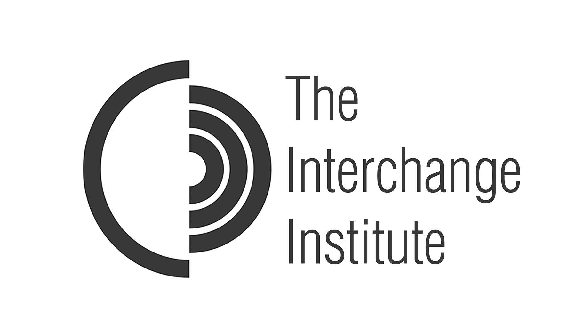

History
English Now! was founded in 1991 by two English teachers, Jan Rea and Anda Sztankay, and has served Washington, D.C.'s international community from its location in Bethesda for 25 years.

English Now! was inspired by Jan Rea’s experience as a student studying Italian language in a small town outside Siena, Italy. Jan had a wonderful experience studying in a small, Italian town. The atmosphere at the school was welcoming, class sizes were small, and the cultural experience was rich.
Upon Jan’s return to the United States, Jan and Anda created English Now! to provide the same sort of experience to the Washington, D.C., international community. They created a very distinctive sort of language school. Classes are small, with a maximum of six students in group classes, and the school itself is small, still with only nine classrooms. Jan and Anda developed a uniquely personalized school culture that exudes warm and welcoming approach to learning.
The school location itself has also always been distinctive. Originally operated from Jan’s and Anda’s homes, English Now! does not have a typical "institutional" atmosphere. The school moved twice in its early years, first into a small house on Montgomery Lane in Bethesda, Maryland, then in 1995 to another house at 4903 Montgomery Lane that would be its home for 20 years.

We are no longer located in a house, but the school's culture is warm and will make you feel "at home." Though Jan and Anda have retired, the atmosphere they created remains. We are honored that Anda, in the middle in the photo above, serves on our Advisory Board, and we consider her a friend and appreciate the spirit that she developed at the school.
English Now! Today
English Now! is doing more than ever to engage our community! We are delighted to be deepening our effort to serve Washington, D.C.'s international community and its families with great English classes, more and more activities, and even some programs outside and away from the school.
Our Partners
We are partnering to serve Washington, D.C.’s international community with innovative programs.

Peace Corps. Over 220,000 Americans have served in the Peace Corps in 141 countries since it was founded in 1961. English Now! is delighted to have been named an Employer of National Service by the Peace Corps because of its employment of Returned Peace Corps Volunteers as faculty and in administrative roles.

The Interchange Institute. The Interchange Institute is a Boston-based non-profit research organization established by Dr. Anne P. Copeland, in the right in the photo above. The Interchange Institute’s mission is smoothing intercultural transitions by helping others understand us and coming to understand others better. It conducts research on the process of intercultural transition, produces publications to assist newcomers to the U.S., designs and delivers specialized cross-cultural training workshops, and trains and consults to professionals in the field. English Now! is delighted to partner with the Interchange Institute to provide our students many of its publications and to host its Crossing Cultures with Competence training of trainers workshop in November 2016. Ask us for more information about the workshop, a fantastic, hands-on study of cross-cultural topics for educators and trainers who work with those in intercultural transition.

Green Apple College Guidance. Finally, English Now! is delighted to partner with Green Apple College Guidance, a Bethesda-based organization that in our opinion is the best Washington, D.C.-area college counseling and education consulting firm. International families have specific needs when their children consider college education in the U.S. We are pleased to co-sponsor programs about U.S. university-level education with Green Apple and to refer families to Kelly and Don Fraser, Green Apple’s Founders. Ask us for more information about Green Apple and what they do, and we would be delighted to introduce you to Kelly and Don.
Advisory Board
English Now! is very fortunate to benefit from the advice and counsel of the following members of its Advisory Board:
Rosemary Haefner is Vice President of Human Resources for CareerBuilder.com, the largest online job site in the U.S. She is responsible for developing and implementing global strategies for employee engagement, talent management, organizational design, recruiting, benefits, and community outreach. In this role, she conducts extensive research on global recruitment trends and tactics, job seeker behavior, workplace issues, employee attitudes and HR initiatives. Rosemary is an employment expert who regularly addresses a variety of industry forums as well as appears on television (FOX NEWSCHANNEL, The Donny Deutsh Show, Fox Business TV, CNN, The Early Show, etc.) and radio (NPR, CBS Marketwatch, etc.) programs to discuss the state of the job market, hiring practices and a multitude of workplace issues. Before joining CareerBuilder.com, Rosemary headed up the Midwest Region’s Employee Services team for RCN Corporation. Prior to this, she served as Vice President of Human Resources for AGENCY.COM as well as a Senior Human Resources Consultant at McGladrey & Pullen. She has a B.A. in Political Science from the University of Chicago and an MBA from Northwestern University’s Kellogg Graduate School of Management.
Ana Evelyn Jacir de Lovo is an independent public policy consultant. She returned recently to Central America after six years of service at the Organization of American States in Washington, D.C. Evelyn has had an extraordinary career in public service. She served in the Ministries of Planning and Education in El Salvador, eventually as Minister of Education, a post she held from 1999-2002. She later moved into leadership roles in multilateral organizations including the Central American Council for Higher Education, before her appointment as the President of the Consumer Protection Agency of El Salvador from 2005-2009. Evelyn earned a B.A. in Sociology from Central American University “Jose Simeon Cañas” (UCA). She earned a M.S. in Economics and completed her doctoral coursework in Economics with a focus on Latin American Development at National Autonomous University of Mexico (UNAM).
Jeff Johnson is a Managing Director of Blackford Capital. With more than 23 years of experience in investment banking and private equity investing, he is involved in the firm’s origination and evaluation of new investment activities and governance of various portfolio companies. Prior to joining Blackford Capital, he was a Managing Director and founding principal at Gilbert Global Equity Partners, L.P. (formerly Soros Capital, L.P.), a middle-market private equity firm headquartered in New York City. He led growth equity and management buyout investments in the specialty manufacturing, consumer products and business services sectors as well as served on the boards as a Director or observer of six portfolio companies during his 17 years with the firm. Prior to Gilbert, Jeff worked as a Director in the alternative investments practice at Russell Investments, a global asset management firm, and in a business development role at Kansas City-based Hallmark Cards, Inc. where he co-led the company’s acquisition and divestiture activities primarily in the consumer products and telecommunications industries. Jeff also worked as an investment banker in the mergers and acquisitions department at Goldman, Sachs & Co. He received his bachelor’s degree in economics from Claremont McKenna College and a master’s degree from Harvard Business School.
Andrew Jones is Vice President, Global Education Programs, Discovery Learning Alliance (DLA). Discovery Learning Alliance’s mission is to use the power of media to transform education and improve people's lives in the developing world. In his current role, Andrew oversees the technical and operational management of DLA’s country programs, guiding and supporting country teams to develop and maintain key relationships, ensure program quality and impact, and monitor and report on progress in line with plans and budgets. Andrew has nearly 25 years of programmatic and policy experience in the international development field, including work with CARE in numerous countries overseas and consultancies with UNICEF, Save the Children, Oxfam, ChildFund, Results for Development, and the International Justice Mission. Andrew holds a Juris Doctorate from the University of Virginia, a Masters in Public Affairs from Princeton's Woodrow Wilson School, and a Bachelor of Arts from Duke University.
Emiko Osaki-Araki recently returned to Japan after a two-year appointment as a visiting scholar at the National Institutes of Health (NIH) in Bethesda, Maryland. In Japan, Emiko is a patent engineer in chemistry and molecular biology at Shiga International Patent Office, and she has also served as an instructor in molecular biology, genetic engineering, and biochemistry at Tokyo College of Biotechnology. In the U.S., Emiko’s appointment at NIH focused on research on molecular biology. Her research interest is pathogenic mechanisms of human diseases, especially genetic disorders. Emiko majored in applied biological science and earned a master's degree in agriculture from Nihon University. She loves animals, nature and outdoor activities, and she works as a volunteer guide at Ueno Zoological Gardens in Tokyo to educate visitors about animals and their life. Since returning to Japan, she has also started teaching Japanese to people from outside of Japan and serving as a volunteer to help them adjust to life in Tokyo.
Anda Sztankay founded English Now! with a partner in l991. She was inspired by her interest in language, love of diverse cultures, and desire to work with people from many parts of the world. Born in Riga, Latvia, she grew up in northern Indiana. After receiving a B.A. in English from Valparaiso University and a M.A. in Education from Indiana University, she taught in community college systems in St. Louis, Missouri, and San Jose, California. Moving to the East Coast, she taught English as a Second Language in the Washington area, worked in the travel department of the Inter-American Development Bank, and, after receiving a B.S. in design from the University of Maryland and becoming a certified ASID designer, she worked for Washington commercial interior design firms. After returning to teaching, Anda started English Now! She and her partner retired from the school 12 years later. Since then Anda has been busy with traveling, hiking, theater, Osher classes, yoga and painting, as well as spending time with family and friends. She and her husband live in Montgomery County.
Junhua Wu is a Research Director and Chief Senior Economist at the Japan Research Institute Ltd (JRI), Sumitomo Mitsui Financial Group (SMFG), Japan. Ms. Wu has accumulated extensive experience in China’s political and economic affairs, Sino-US relations and Sino-Japan relations from her research of more than 20 years. She has been a columnist since 1996 for multiple Japanese magazines and (co)author of eight books. Her book, China: Quiet Revolution, won the 25th Masayoshi Ohira Memorial Special Prize in 2008. In the early years of her career, Ms. Wu performed her duties as Chairwoman & Chief Economist at JRI( Shanghai), China; General Manager & Chief Economist at JRI (Hong Kong), SMFG; Visiting Scholar at Harvard University, Senior Scholar at the Woodrow Wilson International Center for Scholars; and Special Research Fellow at Economic System Reform Research Institute of China in Beijing, China. Ms. Wu is a PhD (ABD) in East Asian Studies at Tokyo University, Japan. She received her M.A. in East Asian Studies from Tokyo University, Japan, and B.A. in Japanese Studies from Fudan University, China.
For More Information & Partnerships
English Now! has been serving Washington, D.C.’s international community since 1991. Please contact English Now! Managing Director Paul Boesen, on the left in the photo above, if you would like more information about our purpose, to inspire our students to engage, enjoy, and thrive, in their studies and in their lives in the United States; or about partnering.